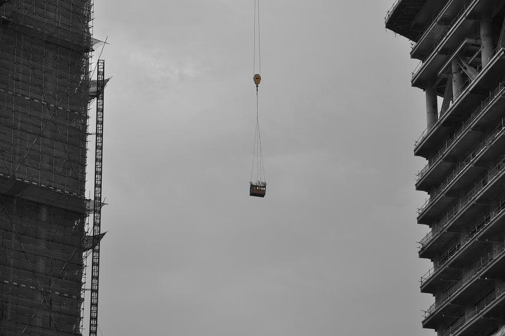
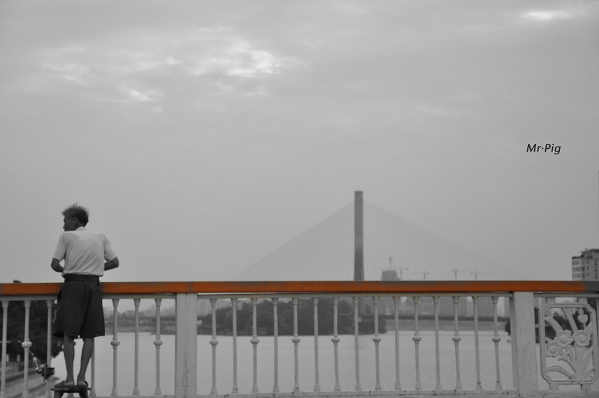
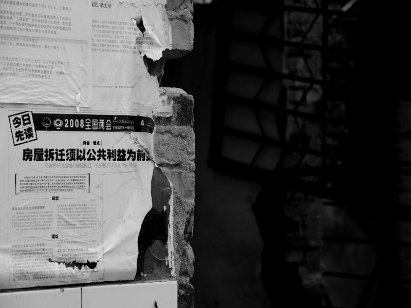

D90影像——猪先生参赛作品展
#1 D90影像——猪先生参赛作品展 作者：猪小姐 发表时间：2011-8-6 0:59:20
相机：尼康D90
镜头：尼康 16-85 F3.5-5.6G VR
作者：猪先生（陈宇鹏）
拍摄地点：福州市茶亭公园、三县洲大桥、三坊七巷
拍摄时间：2011年6-7月
来源：第六届亚洲大学生摄影展
参赛主题：流。交流、流动，潮流、流传。

曾经为散步纳凉好去处的福州茶亭公园，被林立的高楼围得透不过气，福州在迈向现代化的同时也失去了本该有的古老气息和韵味，变得面目全非。这样的建设毫无意义，只能让一个又一个城市变身为上海、深圳的复制品。

以钓鱼为生的老人，许多路人都会选择购买老人钓上来的鱼，虽然他们知道这样的小鱼不能吃。
希望通过这张照片，让大家多关注身边的老人，让老人老有所养，不要一个人孤独地徘徊在城市中。

拆迁之殇。
福州的三坊七巷，有着近千年的历史，并是中国十大历史文化名街之一。随着城市化的推进，这里也被纳入了景观改造的重点之一，从前充满着文化气息的矮小砖瓦房和路边的民间手工艺人逐渐被各种装饰一新的店铺所替代，街头巷尾都充斥着浓厚的商业气息。同时，就在距离三坊七巷仅100米的光禄坊内还留着当时改造时拆迁所留下的痕迹，墙上依旧挂着人们以前春节贴上的春联。现在我们已无法还原从前的一切，但是，希望通过照片，来唤醒人们对旧城区的保护，改造是必然的，只是不要让文化在改造中迷了路。
［此帖子已被 猪小姐 在 2011-8-6 1:11:22 编辑过］
#2 Re:D90影像——猪先生参赛作品展 作者：梧桐风 发表时间：2011-8-6 7:07:53
只有三张啊？一改往日拍摄美好事物的风格啊#3 Re:D90影像——猪先生参赛作品展 作者：猪小姐 发表时间：2011-8-6 16:42:32
╯_╰说明水平提高了。。。#4 Re:D90影像——猪先生参赛作品展 作者：蓝天蓝 发表时间：2011-8-6 16:46:49
值得深思的图
［此帖子已被 蓝天蓝 在 2011-8-6 16:49:05 编辑过］